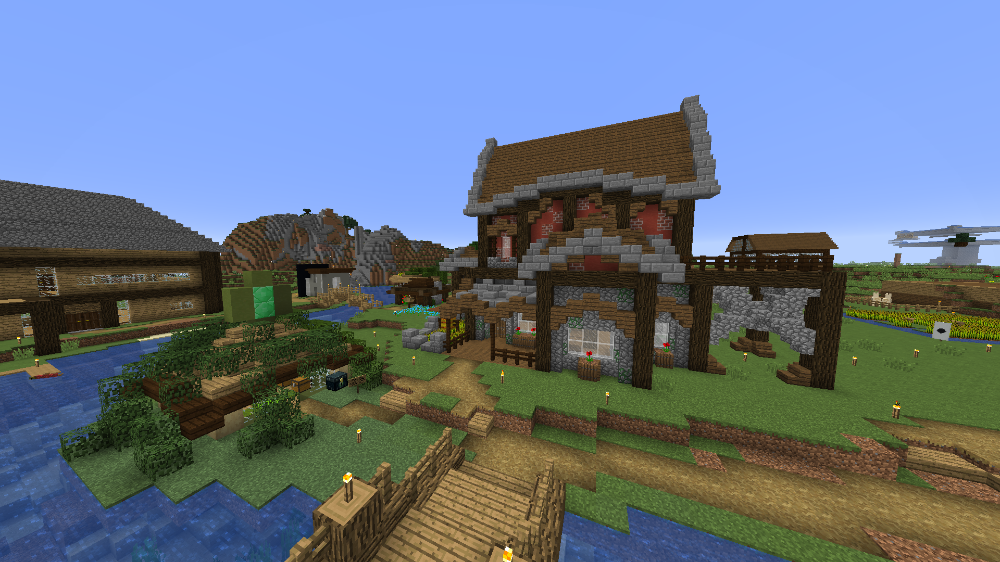

Jacob

Jacob var serverns första medlem. Han startade upp världen under en torsdagshåltimma och det är han som hostar servern fortfarande. Han byggde sitt första hus på samma ställe där det står än idag.Jacobs hus
Jacob har byggt flera farmer, bland annat en guld- och xpfarm ovanför nethertaket, en endermanfarm ute i End och en villager-breeder som förser Jacob med Mendingböcker som han säljer i sin affär.
Jacob har byggt många olika vägar i Nether, både i höjdled och horisontellt. Han har byggt en isväg till Endportalen, en minecarthiss med destination ovanför Nethertaket. Även järnvägar och sandmarkörer till Netherfortress.